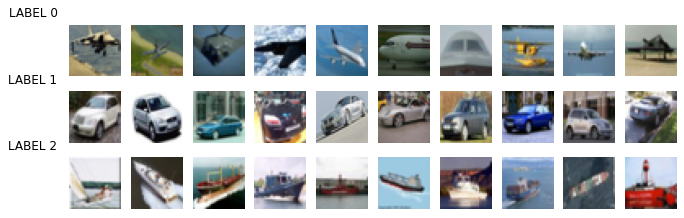

4.5 - Transfer learning#
!wget --no-cache -O init.py -q https://raw.githubusercontent.com/rramosp/2020.deeplearning/master/init.py
from init import init; init(force_download=False)
import tensorflow as tf
from time import time
import pandas as pd
import matplotlib.pyplot as plt
import numpy as np
from local.lib import mlutils
import pickle, bz2
%matplotlib inline
%load_ext tensorboard
Observe AlexNet filters for the first two convolutional layers#
Pretrained Network: https://www.cs.toronto.edu/~guerzhoy/tf_alexnet/
Paper: ImageNet Classification with Deep Convolutional Neural Networks
Source images: Large Scale Visual Recognition Challenge 2012 ImageNet
Local file with weights from first two layers only
!ls -lash local/data/alexnet_conv1_conv2.pklz
1,4M -rw-r--r-- 1 rlx rlx 1,4M Jan 27 21:09 local/data/alexnet_conv1_conv2.pklz
alex_c12 = pickle.load(bz2.BZ2File("local/data/alexnet_conv1_conv2.pklz", "r"), encoding="bytes")
for k,(w,b) in alex_c12.items():
print(k, b.shape, w.shape)
b'conv2' (256,) (5, 5, 48, 256)
b'conv1' (96,) (11, 11, 3, 96)
we use for the moment only the first layer
alex_w1 = alex_c12[b"conv1"][0]
print(alex_w1.shape)
mlutils.display_imgs(alex_w1)
(11, 11, 3, 96)
We will use them as starting point for training our network#
!wget -nc https://s3.amazonaws.com/rlx/mini_cifar.h5
File ‘mini_cifar.h5’ already there; not retrieving.
import h5py
with h5py.File('mini_cifar.h5','r') as h5f:
x_cifar = h5f["x"][:]
y_cifar = h5f["y"][:]
mlutils.show_labeled_image_mosaic(x_cifar, y_cifar)

from sklearn.model_selection import train_test_split
x_train, x_test, y_train, y_test = train_test_split(x_cifar, y_cifar, test_size=.25)
print(x_train.shape, y_train.shape, x_test.shape, y_test.shape)
print("\ndistribution of train classes")
print(pd.Series(y_train).value_counts())
print("\ndistribution of test classes")
print(pd.Series(y_test).value_counts())
(2253, 32, 32, 3) (2253,) (751, 32, 32, 3) (751,)
distribution of train classes
0 769
2 750
1 734
dtype: int64
distribution of test classes
2 275
1 240
0 236
dtype: int64
def get_model(num_classes, img_size=32, compile=True):
print("using",num_classes,"classes")
inputs = tf.keras.Input(shape=(img_size,img_size,3), name="input_1")
layers = tf.keras.layers.Conv2D(96,(11,11), activation="relu")(inputs)
layers = tf.keras.layers.MaxPool2D((2,2))(layers)
layers = tf.keras.layers.Conv2D(60,(11,11), activation="relu")(layers)
layers = tf.keras.layers.Flatten()(layers)
layers = tf.keras.layers.Dropout(0.4)(layers)
layers = tf.keras.layers.Dense(16, activation=tf.nn.relu)(layers)
layers = tf.keras.layers.Dropout(0.4)(layers)
predictions = tf.keras.layers.Dense(num_classes, activation=tf.nn.softmax, name="output_1")(layers)
model = tf.keras.Model(inputs = inputs, outputs=predictions)
if compile:
model.compile(optimizer='adam',
loss='sparse_categorical_crossentropy',
metrics=['accuracy'])
return model
def train(model, batch_size, epochs, model_name=""):
tensorboard = tf.keras.callbacks.TensorBoard(log_dir="logs/"+model_name+"_"+"{}".format(time()))
model.reset_states()
model.fit(x_train, y_train, epochs=epochs, callbacks=[tensorboard],
batch_size=batch_size,
validation_data=(x_test, y_test))
metrics = model.evaluate(x_test, y_test)
return {k:v for k,v in zip (model.metrics_names, metrics)}
num_classes = len(np.unique(y_cifar))
model = get_model(num_classes)
model.summary()
using 3 classes
Model: "model"
_________________________________________________________________
Layer (type) Output Shape Param #
=================================================================
input_1 (InputLayer) [(None, 32, 32, 3)] 0
_________________________________________________________________
conv2d (Conv2D) (None, 22, 22, 96) 34944
_________________________________________________________________
max_pooling2d (MaxPooling2D) (None, 11, 11, 96) 0
_________________________________________________________________
conv2d_1 (Conv2D) (None, 1, 1, 60) 697020
_________________________________________________________________
flatten (Flatten) (None, 60) 0
_________________________________________________________________
dropout (Dropout) (None, 60) 0
_________________________________________________________________
dense (Dense) (None, 16) 976
_________________________________________________________________
dropout_1 (Dropout) (None, 16) 0
_________________________________________________________________
output_1 (Dense) (None, 3) 51
=================================================================
Total params: 732,991
Trainable params: 732,991
Non-trainable params: 0
_________________________________________________________________
Train from scratch#
in some runs might take a while to start reducing loss
train(model, batch_size=16, epochs=15, model_name="alexnet_fintuned")
Epoch 1/15
141/141 [==============================] - 3s 20ms/step - loss: 1.1283 - accuracy: 0.3371 - val_loss: 1.0988 - val_accuracy: 0.3329
Epoch 2/15
141/141 [==============================] - 3s 18ms/step - loss: 1.0934 - accuracy: 0.3666 - val_loss: 1.0427 - val_accuracy: 0.4274
Epoch 3/15
141/141 [==============================] - 3s 18ms/step - loss: 1.0586 - accuracy: 0.4369 - val_loss: 1.0446 - val_accuracy: 0.4314
Epoch 4/15
141/141 [==============================] - 3s 18ms/step - loss: 1.0355 - accuracy: 0.4536 - val_loss: 1.0159 - val_accuracy: 0.4847
Epoch 5/15
141/141 [==============================] - 2s 18ms/step - loss: 1.0295 - accuracy: 0.4641 - val_loss: 1.0007 - val_accuracy: 0.5393
Epoch 6/15
141/141 [==============================] - 3s 18ms/step - loss: 1.0114 - accuracy: 0.5016 - val_loss: 0.9795 - val_accuracy: 0.5499
Epoch 7/15
141/141 [==============================] - 3s 18ms/step - loss: 0.9972 - accuracy: 0.4710 - val_loss: 0.9574 - val_accuracy: 0.5260
Epoch 8/15
141/141 [==============================] - 3s 18ms/step - loss: 0.9842 - accuracy: 0.4825 - val_loss: 0.9475 - val_accuracy: 0.5366
Epoch 9/15
141/141 [==============================] - 3s 19ms/step - loss: 0.9728 - accuracy: 0.4999 - val_loss: 0.9227 - val_accuracy: 0.5566
Epoch 10/15
141/141 [==============================] - 3s 18ms/step - loss: 0.9897 - accuracy: 0.5052 - val_loss: 0.9453 - val_accuracy: 0.5459
Epoch 11/15
141/141 [==============================] - 3s 19ms/step - loss: 0.9494 - accuracy: 0.5428 - val_loss: 0.9663 - val_accuracy: 0.5206
Epoch 12/15
141/141 [==============================] - 3s 19ms/step - loss: 0.9504 - accuracy: 0.5307 - val_loss: 0.9612 - val_accuracy: 0.5193
Epoch 13/15
141/141 [==============================] - 3s 19ms/step - loss: 0.9551 - accuracy: 0.5325 - val_loss: 0.9301 - val_accuracy: 0.5632
Epoch 14/15
141/141 [==============================] - 3s 19ms/step - loss: 0.9412 - accuracy: 0.5141 - val_loss: 0.9355 - val_accuracy: 0.5632
Epoch 15/15
141/141 [==============================] - 3s 18ms/step - loss: 0.9122 - accuracy: 0.5733 - val_loss: 0.9249 - val_accuracy: 0.5686
24/24 [==============================] - 0s 6ms/step - loss: 0.9249 - accuracy: 0.5686
{'loss': 0.9248688220977783, 'accuracy': 0.5685752034187317}
test_preds = model.predict(x_test).argmax(axis=1)
mlutils.plot_confusion_matrix(y_test, test_preds, classes=np.r_[0,1,2], normalize=True)
Normalized confusion matrix
[[0.48305085 0.20762712 0.30932203]
[0.05833333 0.67916667 0.2625 ]
[0.28727273 0.16727273 0.54545455]]
<matplotlib.axes._subplots.AxesSubplot at 0x7f74bf1c3370>
Transfer learning!!!#
Keep first level filters to compare later
model = get_model(num_classes)
w = model.get_weights()
for i in w:
print(i.shape)
using 3 classes
(11, 11, 3, 96)
(96,)
(11, 11, 96, 60)
(60,)
(60, 16)
(16,)
(16, 3)
(3,)
w[0] = alex_w1
model.set_weights(w)
mlutils.display_imgs(model.get_weights()[0])
train(model, batch_size=16, epochs=15, model_name="alexnet_fintuned")
Epoch 1/15
141/141 [==============================] - 3s 20ms/step - loss: 1.1366 - accuracy: 0.3932 - val_loss: 0.9753 - val_accuracy: 0.6458
Epoch 2/15
141/141 [==============================] - 3s 18ms/step - loss: 0.9676 - accuracy: 0.5499 - val_loss: 0.9510 - val_accuracy: 0.5513
Epoch 3/15
141/141 [==============================] - 3s 18ms/step - loss: 0.8886 - accuracy: 0.5938 - val_loss: 0.8310 - val_accuracy: 0.6591
Epoch 4/15
141/141 [==============================] - 3s 18ms/step - loss: 0.8180 - accuracy: 0.6287 - val_loss: 0.7262 - val_accuracy: 0.7084
Epoch 5/15
141/141 [==============================] - 3s 18ms/step - loss: 0.7335 - accuracy: 0.6893 - val_loss: 0.7712 - val_accuracy: 0.6671
Epoch 6/15
141/141 [==============================] - 3s 18ms/step - loss: 0.7056 - accuracy: 0.6992 - val_loss: 0.6892 - val_accuracy: 0.7057
Epoch 7/15
141/141 [==============================] - 3s 18ms/step - loss: 0.6646 - accuracy: 0.7138 - val_loss: 0.6665 - val_accuracy: 0.7217
Epoch 8/15
141/141 [==============================] - 3s 18ms/step - loss: 0.6225 - accuracy: 0.7349 - val_loss: 0.7221 - val_accuracy: 0.7044
Epoch 9/15
141/141 [==============================] - 3s 18ms/step - loss: 0.5744 - accuracy: 0.7654 - val_loss: 0.6893 - val_accuracy: 0.7270
Epoch 10/15
141/141 [==============================] - 3s 20ms/step - loss: 0.5224 - accuracy: 0.7908 - val_loss: 0.6523 - val_accuracy: 0.7417
Epoch 11/15
141/141 [==============================] - 2s 18ms/step - loss: 0.4752 - accuracy: 0.8087 - val_loss: 0.6232 - val_accuracy: 0.7430
Epoch 12/15
141/141 [==============================] - 3s 18ms/step - loss: 0.4926 - accuracy: 0.8066 - val_loss: 0.6843 - val_accuracy: 0.7457
Epoch 13/15
141/141 [==============================] - 3s 18ms/step - loss: 0.4509 - accuracy: 0.8346 - val_loss: 0.6546 - val_accuracy: 0.7563
Epoch 14/15
141/141 [==============================] - 3s 18ms/step - loss: 0.4006 - accuracy: 0.8366 - val_loss: 0.7221 - val_accuracy: 0.7470
Epoch 15/15
141/141 [==============================] - 2s 18ms/step - loss: 0.4072 - accuracy: 0.8469 - val_loss: 0.7341 - val_accuracy: 0.7443
24/24 [==============================] - 0s 5ms/step - loss: 0.7341 - accuracy: 0.7443
{'loss': 0.7341428995132446, 'accuracy': 0.7443408966064453}
test_preds = model.predict(x_test).argmax(axis=1)
mlutils.plot_confusion_matrix(y_test, test_preds, classes=np.r_[0,1,2], normalize=True)
Normalized confusion matrix
[[0.74152542 0.05084746 0.20762712]
[0.12916667 0.8 0.07083333]
[0.21090909 0.09090909 0.69818182]]
<matplotlib.axes._subplots.AxesSubplot at 0x7f74befe5cd0>
first level filters changed but not much
w0 = model.get_weights()[0]
np.mean(np.abs(w0-alex_w1))
0.024149708
mlutils.display_imgs(w[0])
model.save("alexnet_finetuned_minicifar.model")
INFO:tensorflow:Assets written to: alexnet_finetuned_minicifar.model/assets
observe that you can also save separately the architecture
with open('alexnet_finetuned_minicifar.architecture.json', 'w') as f:
f.write(model.to_json())
!ls -lash alexnet_finetuned_minicifar*
4,0K -rw-rw-r-- 1 rlx rlx 3,5K Jan 27 21:11 alexnet_finetuned_minicifar.architecture.json
alexnet_finetuned_minicifar.model:
total 168K
4,0K drwxr-xr-x 4 rlx rlx 4,0K Jan 27 21:11 .
4,0K drwxr-xr-x 7 rlx rlx 4,0K Jan 27 21:11 ..
4,0K drwxr-xr-x 2 rlx rlx 4,0K Jan 27 21:11 assets
152K -rw-rw-r-- 1 rlx rlx 152K Jan 27 21:11 saved_model.pb
4,0K drwxr-xr-x 2 rlx rlx 4,0K Jan 27 21:11 variables
!head alexnet_finetuned_minicifar.architecture.json
{"class_name": "Functional", "config": {"name": "model_1", "layers": [{"class_name": "InputLayer", "config": {"batch_input_shape": [null, 32, 32, 3], "dtype": "float32", "sparse": false, "ragged": false, "name": "input_1"}, "name": "input_1", "inbound_nodes": []}, {"class_name": "Conv2D", "config": {"name": "conv2d_2", "trainable": true, "dtype": "float32", "filters": 96, "kernel_size": [11, 11], "strides": [1, 1], "padding": "valid", "data_format": "channels_last", "dilation_rate": [1, 1], "groups": 1, "activation": "relu", "use_bias": true, "kernel_initializer": {"class_name": "GlorotUniform", "config": {"seed": null}}, "bias_initializer": {"class_name": "Zeros", "config": {}}, "kernel_regularizer": null, "bias_regularizer": null, "activity_regularizer": null, "kernel_constraint": null, "bias_constraint": null}, "name": "conv2d_2", "inbound_nodes": [[["input_1", 0, 0, {}]]]}, {"class_name": "MaxPooling2D", "config": {"name": "max_pooling2d_1", "trainable": true, "dtype": "float32", "pool_size": [2, 2], "padding": "valid", "strides": [2, 2], "data_format": "channels_last"}, "name": "max_pooling2d_1", "inbound_nodes": [[["conv2d_2", 0, 0, {}]]]}, {"class_name": "Conv2D", "config": {"name": "conv2d_3", "trainable": true, "dtype": "float32", "filters": 60, "kernel_size": [11, 11], "strides": [1, 1], "padding": "valid", "data_format": "channels_last", "dilation_rate": [1, 1], "groups": 1, "activation": "relu", "use_bias": true, "kernel_initializer": {"class_name": "GlorotUniform", "config": {"seed": null}}, "bias_initializer": {"class_name": "Zeros", "config": {}}, "kernel_regularizer": null, "bias_regularizer": null, "activity_regularizer": null, "kernel_constraint": null, "bias_constraint": null}, "name": "conv2d_3", "inbound_nodes": [[["max_pooling2d_1", 0, 0, {}]]]}, {"class_name": "Flatten", "config": {"name": "flatten_1", "trainable": true, "dtype": "float32", "data_format": "channels_last"}, "name": "flatten_1", "inbound_nodes": [[["conv2d_3", 0, 0, {}]]]}, {"class_name": "Dropout", "config": {"name": "dropout_2", "trainable": true, "dtype": "float32", "rate": 0.4, "noise_shape": null, "seed": null}, "name": "dropout_2", "inbound_nodes": [[["flatten_1", 0, 0, {}]]]}, {"class_name": "Dense", "config": {"name": "dense_1", "trainable": true, "dtype": "float32", "units": 16, "activation": "relu", "use_bias": true, "kernel_initializer": {"class_name": "GlorotUniform", "config": {"seed": null}}, "bias_initializer": {"class_name": "Zeros", "config": {}}, "kernel_regularizer": null, "bias_regularizer": null, "activity_regularizer": null, "kernel_constraint": null, "bias_constraint": null}, "name": "dense_1", "inbound_nodes": [[["dropout_2", 0, 0, {}]]]}, {"class_name": "Dropout", "config": {"name": "dropout_3", "trainable": true, "dtype": "float32", "rate": 0.4, "noise_shape": null, "seed": null}, "name": "dropout_3", "inbound_nodes": [[["dense_1", 0, 0, {}]]]}, {"class_name": "Dense", "config": {"name": "output_1", "trainable": true, "dtype": "float32", "units": 3, "activation": "softmax", "use_bias": true, "kernel_initializer": {"class_name": "GlorotUniform", "config": {"seed": null}}, "bias_initializer": {"class_name": "Zeros", "config": {}}, "kernel_regularizer": null, "bias_regularizer": null, "activity_regularizer": null, "kernel_constraint": null, "bias_constraint": null}, "name": "output_1", "inbound_nodes": [[["dropout_3", 0, 0, {}]]]}], "input_layers": [["input_1", 0, 0]], "output_layers": [["output_1", 0, 0]]}, "keras_version": "2.4.0", "backend": "tensorflow"}
Could also freeze weights to avoid being changed by training#
def get_modelT(num_classes, img_size=32, compile=True):
print("using",num_classes,"classes")
inputs = tf.keras.Input(shape=(img_size,img_size,3), name="input_1")
layers = tf.keras.layers.Conv2D(96,(11,11), activation="relu", trainable=False)(inputs)
layers = tf.keras.layers.MaxPool2D((2,2))(layers)
layers = tf.keras.layers.Conv2D(60,(11,11), activation="relu")(layers)
layers = tf.keras.layers.Flatten()(layers)
layers = tf.keras.layers.Dropout(0.4)(layers)
layers = tf.keras.layers.Dense(16, activation=tf.nn.relu)(layers)
layers = tf.keras.layers.Dropout(0.4)(layers)
predictions = tf.keras.layers.Dense(num_classes, activation=tf.nn.softmax, name="output_1")(layers)
model = tf.keras.Model(inputs = inputs, outputs=predictions)
if compile:
model.compile(optimizer='adam',
loss='sparse_categorical_crossentropy',
metrics=['accuracy'])
return model
model = get_modelT(num_classes)
w = model.get_weights()
w[0] = alex_w1
model.set_weights(w)
using 3 classes
train(model, batch_size=16, epochs=15, model_name="alexnet_fintuned")
Epoch 1/15
141/141 [==============================] - 2s 10ms/step - loss: 1.3444 - accuracy: 0.3657 - val_loss: 0.9156 - val_accuracy: 0.5406
Epoch 2/15
141/141 [==============================] - 1s 10ms/step - loss: 0.9494 - accuracy: 0.5068 - val_loss: 0.8395 - val_accuracy: 0.6059
Epoch 3/15
141/141 [==============================] - 1s 9ms/step - loss: 0.8832 - accuracy: 0.5502 - val_loss: 0.7787 - val_accuracy: 0.7204
Epoch 4/15
141/141 [==============================] - 1s 9ms/step - loss: 0.8231 - accuracy: 0.5990 - val_loss: 0.6660 - val_accuracy: 0.7683
Epoch 5/15
141/141 [==============================] - 1s 9ms/step - loss: 0.7679 - accuracy: 0.6256 - val_loss: 0.6897 - val_accuracy: 0.7483
Epoch 6/15
141/141 [==============================] - 1s 9ms/step - loss: 0.7963 - accuracy: 0.6048 - val_loss: 0.5991 - val_accuracy: 0.7656
Epoch 7/15
141/141 [==============================] - 1s 10ms/step - loss: 0.7414 - accuracy: 0.6711 - val_loss: 0.6323 - val_accuracy: 0.7510
Epoch 8/15
141/141 [==============================] - 1s 9ms/step - loss: 0.6887 - accuracy: 0.6659 - val_loss: 0.5820 - val_accuracy: 0.7750
Epoch 9/15
141/141 [==============================] - 1s 9ms/step - loss: 0.6968 - accuracy: 0.6589 - val_loss: 0.5667 - val_accuracy: 0.7883
Epoch 10/15
141/141 [==============================] - 1s 9ms/step - loss: 0.6699 - accuracy: 0.6929 - val_loss: 0.6296 - val_accuracy: 0.7870
Epoch 11/15
141/141 [==============================] - 1s 9ms/step - loss: 0.6654 - accuracy: 0.6872 - val_loss: 0.5682 - val_accuracy: 0.7963
Epoch 12/15
141/141 [==============================] - 1s 9ms/step - loss: 0.6421 - accuracy: 0.6983 - val_loss: 0.5988 - val_accuracy: 0.7763
Epoch 13/15
141/141 [==============================] - 1s 9ms/step - loss: 0.6433 - accuracy: 0.6959 - val_loss: 0.5548 - val_accuracy: 0.7909
Epoch 14/15
141/141 [==============================] - 1s 9ms/step - loss: 0.5953 - accuracy: 0.7325 - val_loss: 0.5475 - val_accuracy: 0.7870
Epoch 15/15
141/141 [==============================] - 1s 8ms/step - loss: 0.5750 - accuracy: 0.7506 - val_loss: 0.5833 - val_accuracy: 0.7923
24/24 [==============================] - 0s 6ms/step - loss: 0.5833 - accuracy: 0.7923
{'loss': 0.5832616686820984, 'accuracy': 0.7922769784927368}
test_preds = model.predict(x_test).argmax(axis=1)
mlutils.plot_confusion_matrix(y_test, test_preds, classes=np.r_[0,1,2], normalize=True)
Normalized confusion matrix
[[0.75 0.05932203 0.19067797]
[0.06666667 0.81666667 0.11666667]
[0.13454545 0.05818182 0.80727273]]
<matplotlib.axes._subplots.AxesSubplot at 0x7f74fc333490>
check filters did not change
w0 = model.get_weights()[0]
np.mean(np.abs(w0-alex_w1))
0.0